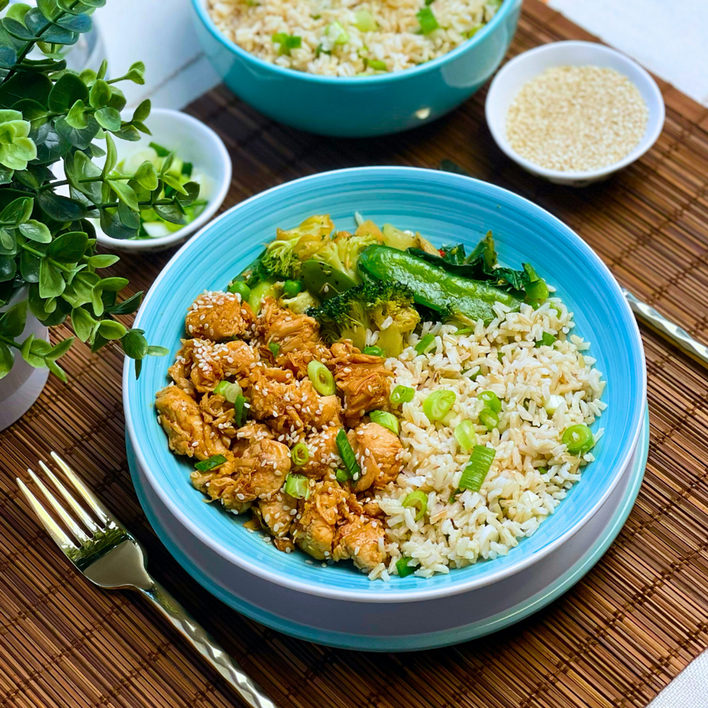

CHICKEN TERIYAKI BOWL

Description
This recipe features juicy chicken thighs glazed in a homemade teriyaki sauce,
served over a bed of steamed rice. The teriyaki sauce is a perfect balance of sweet,
savory, and tangy flavors made with soy sauce, mirin, and sugar.
The chicken is cooked until caramelized and tender, absorbing the rich flavors of the sauce.
Topped with fresh vegetables and a sprinkle of sesame seeds, this dish is both delicious and visually appealing.
It's a comforting meal that's quick and easy to prepare, making it perfect for a weeknight dinner.
Ingredients
- 4 boneless, skinless chicken thighs
- 1/4 cup soy sauce
- 1/4 cup mirin
- 2 tablespoons sugar
- 1 tablespoon sake (optional)
- 1 tablespoon vegetable oil
- 1 clove garlic, minced
- 1 teaspoon ginger, grated
- 2 cups steamed rice
- Sliced green onions, for garnish
- Sesame seeds, for garnish
- Steamed vegetables (like broccoli, carrots, and snow peas), for serving
Steps
- Prepare the Teriyaki Sauce: In a small bowl, combine the soy sauce, mirin, sugar, and sake (if using). Stir until the sugar is dissolved.
- Cook the Chicken: Heat the vegetable oil in a skillet over medium heat. Add the chicken thighs and cook for 5-7 minutes on each side, until golden brown and cooked through. Remove the chicken from the skillet and set aside.
- Make the Teriyaki Glaze: In the same skillet, add the minced garlic and grated ginger. Sauté for 1 minute until fragrant. Pour in the teriyaki sauce and bring it to a simmer. Cook for 2-3 minutes until the sauce thickens.
- Glaze the Chicken: Return the cooked chicken to the skillet, turning to coat each piece in the teriyaki glaze. Let the chicken simmer in the sauce for an additional 2 minutes to absorb the flavors.
- Prepare the Bowls: Divide the steamed rice among serving bowls. Top with the glazed chicken and drizzle any remaining teriyaki sauce over the top.
- Add Toppings: Garnish with sliced green onions, sesame seeds, and steamed vegetables. Serve hot and enjoy!